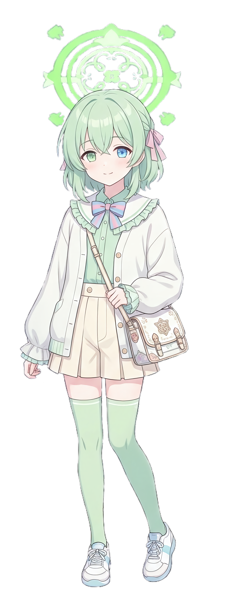

SYSTEM STATUS: ONLINE (Version 16.0.3)
ロールアウト日：2010/01/15
【 基本情報 】
名前：鷲見結希（Sumi Yuuki / スミ ユウキ）ロールアウト日：2010/01/15
年齢：16歳（2026年3月現在）
趣味：ゲーム、機械、アニメ
特技：PC、ゲーム、電子機器の操作
学年：1年生(留年)
【 特殊ステータス 】 体質：TS体質（激カワ男の娘 ⇔ 超絶アニメ顔美少女）

NORMAL(仮ビジュ)
TS-ACTIVE(仮ビジュ)
【 現在装備：EQUIPMENT 】 ■ インナーマッスルスーツ：エンチャンター (enchanter)
・本体重量：1.52kg / 耐荷重：92トン
・最大推進力：12トン / 稼働時間：最大11ヶ月
■ 近接武装：高周波振動刀「星今宵（ホシコヨイ）」
・振動数：ペタHz単位 / 刃紋：三日月・天の川状
・稼働色：通常時（翠）/ 最大稼働時（桜）
■ ABE-115L アマツカゼ軽 (Amatsukaze-Kei)
- インナーマッスルスーツ「エンチャンター」の上層に装備するEXギア発展型兵装。
- 推進系：熱核惑星ロケットエンジン×3（2次元推力偏向ノズル搭載）
- 動力系：Pリアクター×2 ＋ プラネットコンデンサ
- 武装：側頭部パルスレーザーバルカン ＋ 各種携行兵装
[ PARAMETER ] 推進力：19.8t / 全備重量：1.5t / 接続：ユニバーサル規格
【 FIREARMS：銃火器・近接兵装 】 ■ 「グリント」(Glint)
- 電磁加速機構搭載カービン。OLEDモニターで状況管理し、ジェネレーターで加速用エネルギーを生成。 (Base: M4A1)
[ PARAMETER ] 威力：A / 貫徹力：S / 信頼性：EX
■ 狙撃銃「Arcange」(蔑称:ArcLight)
- 初速3756.4km/m突破の電磁加速狙撃銃。FCS連携スコープ搭載。 (Base: L96)
[ PARAMETER ] 射程：SSS / 初速：マッハ3+ / 精度：A+
■ 散弾銃「タイラント」(tyrant)
- 特殊強装弾対応、職人による給弾加工や新型拡散システムと機械式ショットシェル加速システム搭載。 (Base: SuperSSII)
[ PARAMETER ] 近接火力：S / 装填速度：A / 剛性：A
■ 自動拳銃「ハレイション」(Halation)
- 試験中の新型ナノダイヤポリカーボネート換装。 (Base: G18C)
[ PARAMETER ] 携行性：S / 信頼性：SS / 操作性：A
■ 高周波振動刀「星今宵（ホシコヨイ）」
- ペタHz振動による分子結合分断。通常時：翠 / 最大稼働時：桜色。
[ PARAMETER ] 斬れ味：測定不能 / ロマン：限界突破 / 芸術性：SSS
【 SNS LINKS：電脳活動拠点 】


🛰️ SYSTEM STATUS: TUNE
| IP ADDRESS | 61.21.137.107:25565 |
| VERSION | 1.26(JAVA Edition) |
| ENGINE | Paper (Optimized) |
| CAPACITY | Max 35 Units |
| DIFFICULTY | 休止中 |
| SPAWN POINT/CONTACT | X: 0 / Z: 0 (Central Hub) hazuki.yuuki.144@gmail.com |
Logged at: 2026.03.24 13:42 // Command Unit
【 設定一覧 】
▶ 子：VF-31Xs グードルーン
【 独自改良機:VF-31Xsグードルーン 】
VF-31Xs グードルーン
設計&開発:BIGBOSS社 銀河工廠 アンタレスワークス コノエエンジニアズ
製造:BIGBOSS社 VF系機体製造部門
搭載エンジン:BIGBOSS/新星/八ツ菱 ステージ2S FF-3003X/FC3 惑星波動核融合式還流タービンエンジン×2
全高(ファイター):3.86m
全高(バトロイド、頭部機銃含まず):15.34m
全長(ファイター):19.31m
全幅(ファイター):14.86m
空虚重量(全種類の燃料満載 マルチパーパスコンテナなし 武装全搭載 追加パックなし)
S・C・A型:7558kg
F・E型:7671kg
S型結希機:7869kg
慣性制御:BIGBOSS ISC-52X(最大設計限界速度の3倍のGを12年間貯蔵可能)
慣性制御:機体構造材(の素材による副次的な超高性能ISC機能)とコクピット周辺にコーティングされたGN粒子
副機:F305改Nano 高機動ヴァリアブルバーニアスラスター スラストリバーサー&3D高機動ノズル
通常時最高速:M11+
ワープアフターバーナー/ワープ/フォールド航法時最高速:光速の550万倍
最大設計限界速度:光速の893万倍
使用燃料:1ccの吸気した空気(9ヶ月) 0.1ccの真空(真空からエンジンが波動エネルギーとしてもエネルギーを取り出しているため12ヶ月と50時間) 高濃度高圧縮液化水酸(空間機動時の副機スラスター用 下手に動かしまくっても10ヶ月は持つ)
構造材:S²CM²VPS・エネルギー転換対応型サイコフレーム・粒子状フォールドクォーツ混合型
装甲:S²CM²基本式エネルギー転換・斥力装甲
OS:ウリエル バージョンヴェイタ
操縦系:EXギア またはアマツカゼ軽、アマツカゼシステム
機能:分子構造変化式皮膜によるカラー変更機能(光学迷彩としても使用可能でパーソナルマークも印刷可能)
機能:擬似全天周モニター(VF-31AXとほぼ同じだが、インターフェースの改良や既存の操作インターフェースを活用し、空中投影してるような表示にし、戦闘を妨げないようにしている。)
隠し機能(結希機のみ):ブルートモード
頭部のバイザーセンサが格納されツインアイが露出、フェイスマスクが展開。人の口を想起させるような形状と口腔内からの強制排気で、さながら獣のように振る舞う。
結希機のみに実装された機能で、脚部のエンジン出力が上昇し、形態はバトロイドに固定される。
【 バリエーション 】 S型:指揮官機で、頭部形状はYF-29を想起させる。主に通信能力と指揮管制能力の向上、電子戦機との連携能力向上と、エンジン周りと駆動系のソフトウェアリミッター解除が実施される他、ファイター形態とバトロイド形態時、専用ソフトウェアにより一般機と比較して最大115%の能力向上が見込める
S型結希機:蔑称、あの世行きの翡翠色の切符。この機体がそう呼ばれる所以は専用モデルとしてあつらえられ、その上最適化がこの上ないほど施された機体が結希を持つと他の機より比べ物にならないほど被害を出すためである。
頭部形状に差異はないが、バイザーセンサー内にツインアイを搭載しており、フェイスマスクの展開変形機構も有している他、通常のS型と比べ、更に115%の能力向上を果たしている他、コクピットのアマツカゼ軽には強力な小児用強心剤とアドレナリン、半神経接続システムやレーダーシステムの強化、ブルートモードの搭載も目を引く。メインカラーはパステルグリーン。
F型:空戦特化の調整が加えられ、頭部形状はVF-31Jを想起させる。一般機と比べ空戦性能は68%上昇してる。
C型:制空戦闘特化の調整が加えられた機体、頭部形状はVF-31C与YF-27を想起させる。F型との連携も視野に入れられている。
E型:電子戦と早期警戒機の役割を持つ機体、後部座席のインターフェースはAWACS向けのものに変更されている。
A型:頭部形状はVF-31AとVF-25Aを想起させる形状となっており、外観はE型と共通。一般機なため特筆すべき事項はない。
【 武装 】 ・頭部ガルザーGeZ15S(S型4門 F・C型2門 A・E型一門)
・ハワードLu-23F アサルトビームガンポッド
・八ツ菱 両腕部GaJ-8 30mm超電磁射出型エレクドマシンガン 『リタリエーション』
・高周波振動式アサルトナイフ『月影(ツキカゲ)』(結希の星今宵の技術とピンポイントバリア技術転用式のアサルトナイフの技術融合)
・クラウンアーク AMM-4A脚部多目的マイクロミサイルパレット
【 防御装備 】 ・防弾シールド×2
・BIGBOSSオモヒカネ工廠 タ式12系斥力装甲システム
・BIGBOSS/モルゲンレーテ/LAI 透過式VPS装甲皮膜
・BIGBOSS/モルゲンレーテ/LAI VPBX-F22 新型ピンポイントバリアシステム
・BIGBOSSオモヒカネ工廠 アクティブステルスシステム
・BIGBOSS HDJM-42Fチャフアンドフレア
設計&開発:BIGBOSS社 銀河工廠 アンタレスワークス コノエエンジニアズ
製造:BIGBOSS社 VF系機体製造部門
搭載エンジン:BIGBOSS/新星/八ツ菱 ステージ2S FF-3003X/FC3 惑星波動核融合式還流タービンエンジン×2
全高(ファイター):3.86m
全高(バトロイド、頭部機銃含まず):15.34m
全長(ファイター):19.31m
全幅(ファイター):14.86m
空虚重量(全種類の燃料満載 マルチパーパスコンテナなし 武装全搭載 追加パックなし)
S・C・A型:7558kg
F・E型:7671kg
S型結希機:7869kg
慣性制御:BIGBOSS ISC-52X(最大設計限界速度の3倍のGを12年間貯蔵可能)
慣性制御:機体構造材(の素材による副次的な超高性能ISC機能)とコクピット周辺にコーティングされたGN粒子
副機:F305改Nano 高機動ヴァリアブルバーニアスラスター スラストリバーサー&3D高機動ノズル
通常時最高速:M11+
ワープアフターバーナー/ワープ/フォールド航法時最高速:光速の550万倍
最大設計限界速度:光速の893万倍
使用燃料:1ccの吸気した空気(9ヶ月) 0.1ccの真空(真空からエンジンが波動エネルギーとしてもエネルギーを取り出しているため12ヶ月と50時間) 高濃度高圧縮液化水酸(空間機動時の副機スラスター用 下手に動かしまくっても10ヶ月は持つ)
構造材:S²CM²VPS・エネルギー転換対応型サイコフレーム・粒子状フォールドクォーツ混合型
装甲:S²CM²基本式エネルギー転換・斥力装甲
OS:ウリエル バージョンヴェイタ
操縦系:EXギア またはアマツカゼ軽、アマツカゼシステム
機能:分子構造変化式皮膜によるカラー変更機能(光学迷彩としても使用可能でパーソナルマークも印刷可能)
機能:擬似全天周モニター(VF-31AXとほぼ同じだが、インターフェースの改良や既存の操作インターフェースを活用し、空中投影してるような表示にし、戦闘を妨げないようにしている。)
隠し機能(結希機のみ):ブルートモード
頭部のバイザーセンサが格納されツインアイが露出、フェイスマスクが展開。人の口を想起させるような形状と口腔内からの強制排気で、さながら獣のように振る舞う。
結希機のみに実装された機能で、脚部のエンジン出力が上昇し、形態はバトロイドに固定される。
【 バリエーション 】 S型:指揮官機で、頭部形状はYF-29を想起させる。主に通信能力と指揮管制能力の向上、電子戦機との連携能力向上と、エンジン周りと駆動系のソフトウェアリミッター解除が実施される他、ファイター形態とバトロイド形態時、専用ソフトウェアにより一般機と比較して最大115%の能力向上が見込める
S型結希機:蔑称、あの世行きの翡翠色の切符。この機体がそう呼ばれる所以は専用モデルとしてあつらえられ、その上最適化がこの上ないほど施された機体が結希を持つと他の機より比べ物にならないほど被害を出すためである。
頭部形状に差異はないが、バイザーセンサー内にツインアイを搭載しており、フェイスマスクの展開変形機構も有している他、通常のS型と比べ、更に115%の能力向上を果たしている他、コクピットのアマツカゼ軽には強力な小児用強心剤とアドレナリン、半神経接続システムやレーダーシステムの強化、ブルートモードの搭載も目を引く。メインカラーはパステルグリーン。
F型:空戦特化の調整が加えられ、頭部形状はVF-31Jを想起させる。一般機と比べ空戦性能は68%上昇してる。
C型:制空戦闘特化の調整が加えられた機体、頭部形状はVF-31C与YF-27を想起させる。F型との連携も視野に入れられている。
E型:電子戦と早期警戒機の役割を持つ機体、後部座席のインターフェースはAWACS向けのものに変更されている。
A型:頭部形状はVF-31AとVF-25Aを想起させる形状となっており、外観はE型と共通。一般機なため特筆すべき事項はない。
【 武装 】 ・頭部ガルザーGeZ15S(S型4門 F・C型2門 A・E型一門)
・ハワードLu-23F アサルトビームガンポッド
・八ツ菱 両腕部GaJ-8 30mm超電磁射出型エレクドマシンガン 『リタリエーション』
・高周波振動式アサルトナイフ『月影(ツキカゲ)』(結希の星今宵の技術とピンポイントバリア技術転用式のアサルトナイフの技術融合)
・クラウンアーク AMM-4A脚部多目的マイクロミサイルパレット
【 防御装備 】 ・防弾シールド×2
・BIGBOSSオモヒカネ工廠 タ式12系斥力装甲システム
・BIGBOSS/モルゲンレーテ/LAI 透過式VPS装甲皮膜
・BIGBOSS/モルゲンレーテ/LAI VPBX-F22 新型ピンポイントバリアシステム
・BIGBOSSオモヒカネ工廠 アクティブステルスシステム
・BIGBOSS HDJM-42Fチャフアンドフレア
▼ 追加パック
【 追加パック 】
■ ハイマニューババッケージ
・主翼部追加装甲内ロケットブースターエンジン×2
・脚部追加装甲内高精度バーニアスラスター×12
■ スーパーパック
・主翼部追加装甲内ロケットブースターエンジン×4
・脚部追加装甲
・増加マイクロミサイルパレット×4
・姿勢制御用追加装甲内高精度バーニアスラスター×64
・胸部追加装甲内マイクロミサイルパレット×2
・胸部追加装甲
■ アーマードパック
・主翼部追加装甲プラットフォーム内大型ロケットブースターエンジン×4
・主翼基部 増加ロケットブースターエンジン×2
・脚部増加装甲
・脚部増加ブースター兼姿勢制御用バーニアスラスター×8
・脚部大型マイクロミサイルパレット×6
・胸部増加装甲
・胸部増加装甲内大型マイクロミサイルパレット×2
・胸部追加装甲内中型マイクロミサイルパレット×2
・新型MDEビーム砲塔(マルチパーパスコンテナ)
・主翼部追加装甲プラットフォームシステム
・回転式マイクロミサイルランチャー×8
・自由旋回型粒子ビーム砲×4
■ 外部装備(主翼下部)
・AIM-9サイドワインダー
・R-74M2
・AIM-260
・99式空対空誘導弾改
・R-77M
■ 選択式兵装
・ビフォーズCIMM-5A/A マイクロミサイル
・ラミントンHMM-7C 近接マイクロミサイル
・主翼部追加装甲内ロケットブースターエンジン×2
・脚部追加装甲内高精度バーニアスラスター×12
■ スーパーパック
・主翼部追加装甲内ロケットブースターエンジン×4
・脚部追加装甲
・増加マイクロミサイルパレット×4
・姿勢制御用追加装甲内高精度バーニアスラスター×64
・胸部追加装甲内マイクロミサイルパレット×2
・胸部追加装甲
■ アーマードパック
・主翼部追加装甲プラットフォーム内大型ロケットブースターエンジン×4
・主翼基部 増加ロケットブースターエンジン×2
・脚部増加装甲
・脚部増加ブースター兼姿勢制御用バーニアスラスター×8
・脚部大型マイクロミサイルパレット×6
・胸部増加装甲
・胸部増加装甲内大型マイクロミサイルパレット×2
・胸部追加装甲内中型マイクロミサイルパレット×2
・新型MDEビーム砲塔(マルチパーパスコンテナ)
・主翼部追加装甲プラットフォームシステム
・回転式マイクロミサイルランチャー×8
・自由旋回型粒子ビーム砲×4
■ 外部装備(主翼下部)
・AIM-9サイドワインダー
・R-74M2
・AIM-260
・99式空対空誘導弾改
・R-77M
■ 選択式兵装
・ビフォーズCIMM-5A/A マイクロミサイル
・ラミントンHMM-7C 近接マイクロミサイル
▶ 装甲やエンジン等
【 装甲やエンジン等 】
▼ S²CM²について
【 S²CM²について 】
超鋼カーボン混合材
略称はS²CM²(二乗表記の方が正式略称になりつつある)
BIGBOSS社の開発した万能金属資材。
従来のカーボン系鋼材とは一線を画する耐久性、耐熱性、耐圧性、抗堪性、引っ張り体制など、様々な試験をパスし、今や続々と世界の装甲材や構造材はこれに置き換えられている。
素材によって特性を変えることができ、一般的なチタンとアルミセラミック、タングステンの組み合わせや、軽量特化のアルミタングステンの組み合わせなど、多岐に渡る組み合わせが存在する。
BIGBOSS社がデモンストレーションとして、B-747の構造材と表面をこれらに置き換え、448トンだった機体が108トンにまで軽量化された。
略称はS²CM²(二乗表記の方が正式略称になりつつある)
BIGBOSS社の開発した万能金属資材。
従来のカーボン系鋼材とは一線を画する耐久性、耐熱性、耐圧性、抗堪性、引っ張り体制など、様々な試験をパスし、今や続々と世界の装甲材や構造材はこれに置き換えられている。
素材によって特性を変えることができ、一般的なチタンとアルミセラミック、タングステンの組み合わせや、軽量特化のアルミタングステンの組み合わせなど、多岐に渡る組み合わせが存在する。
BIGBOSS社がデモンストレーションとして、B-747の構造材と表面をこれらに置き換え、448トンだった機体が108トンにまで軽量化された。
▼ アマツカゼシステムについて
【 アマツカゼシステムについて 】
最大全高:2.3m
最大全幅:1.2m(主翼と兵装ステーション含めず)
全備重量:1.6t
動力:Pリアクター
推進器:F135改nano 空間対応型
総推進力:19.8t/s
装甲箇所(展開格納可能):胸部 腹部(細分化されているが隙間には軟化S²CM²がシャッターのように下ろされるので問題なし) 頭部 肩部(従来のEXギアのようにシート時肩の場所を構成する) 大腿部 腰部 脚部 二の腕 前腕部
関節保護装甲:軟化S²CM²
装甲:S²CM²
関節駆動方式:ハイスピードハイトルクサーボ 外骨格内部のS²CM²で構成された筋繊維ユニット
対応機種:EXギアシステム対応機、VF-31Xs、KoB-02などのアマツカゼ軽対応機
搭載武装数:6
固定武装:両側頭部回転式パルスレーザー砲
分類:パペット(着用式パワードスーツを指す)
【 解説 】 結希のアマツカゼとそのインナーパワードスーツアマツカゼ軽を量産化出来るようにBIGBOSS社がEXギアシステムの設計思想を元にアマツカゼ軽の思想を組み合わせて完成させた。派生型EXギアシステム、外骨格式他機能強化装具、パワードスーツ、パペットの一種である。
背部に折りたたみ式の垂直尾翼2枚と、折りたたみ式の中型主翼を集約した動力推進ユニットを装着している。
推進系は大腿部のF135改nanoに加え、2次元方向の推進ベクトル偏向ノズルを搭載した熱核惑星ロケットエンジン3基を搭載。
兵装ステーションはなるべく小型に収納できるようにしており、大きすぎた場合1度四次元量子空間で粒子として転送するので安心。
EXギアとしての機能は健在で、さらに進化している他、パワードスーツ時のヘルメットを保護するシェルバイザーは、顔面が位置する装甲内部はモニターとなっており、様々な情報を投影可能。シェルバイザーの機能は他にもあり、複合光学センサー(ツインアイ内蔵のバイザータイプ)やヘルメットの無線機能の強化、視界外の敵の検知と警告表示、兵装ステーションと対応した銃器の連携による残弾表示とFCS情報の投影など様々である。
結希の専用の物は装甲圧をそのままに、軽量、高強度化タイプのS²CM²をふんだんに使用し、指揮管制能力や生命維持能力等を最大化した実質ワンオフモデルを使用している他、カラーリングはパールホワイトを基調としつつB2FBA5のパステルグリーンを差し色に使用している他、関節モーター部は金で作られている。
これは成金アピールではなく、関節駆動系のベアリングの素材検証も兼ねているからである。
本人談では「金の素材の方がハード的な反応速度と速度向上が見込めた気がするしストフリみたいでかっこいい」と評している。
最大全幅:1.2m(主翼と兵装ステーション含めず)
全備重量:1.6t
動力:Pリアクター
推進器:F135改nano 空間対応型
総推進力:19.8t/s
装甲箇所(展開格納可能):胸部 腹部(細分化されているが隙間には軟化S²CM²がシャッターのように下ろされるので問題なし) 頭部 肩部(従来のEXギアのようにシート時肩の場所を構成する) 大腿部 腰部 脚部 二の腕 前腕部
関節保護装甲:軟化S²CM²
装甲:S²CM²
関節駆動方式:ハイスピードハイトルクサーボ 外骨格内部のS²CM²で構成された筋繊維ユニット
対応機種:EXギアシステム対応機、VF-31Xs、KoB-02などのアマツカゼ軽対応機
搭載武装数:6
固定武装:両側頭部回転式パルスレーザー砲
分類:パペット(着用式パワードスーツを指す)
【 解説 】 結希のアマツカゼとそのインナーパワードスーツアマツカゼ軽を量産化出来るようにBIGBOSS社がEXギアシステムの設計思想を元にアマツカゼ軽の思想を組み合わせて完成させた。派生型EXギアシステム、外骨格式他機能強化装具、パワードスーツ、パペットの一種である。
背部に折りたたみ式の垂直尾翼2枚と、折りたたみ式の中型主翼を集約した動力推進ユニットを装着している。
推進系は大腿部のF135改nanoに加え、2次元方向の推進ベクトル偏向ノズルを搭載した熱核惑星ロケットエンジン3基を搭載。
兵装ステーションはなるべく小型に収納できるようにしており、大きすぎた場合1度四次元量子空間で粒子として転送するので安心。
EXギアとしての機能は健在で、さらに進化している他、パワードスーツ時のヘルメットを保護するシェルバイザーは、顔面が位置する装甲内部はモニターとなっており、様々な情報を投影可能。シェルバイザーの機能は他にもあり、複合光学センサー(ツインアイ内蔵のバイザータイプ)やヘルメットの無線機能の強化、視界外の敵の検知と警告表示、兵装ステーションと対応した銃器の連携による残弾表示とFCS情報の投影など様々である。
結希の専用の物は装甲圧をそのままに、軽量、高強度化タイプのS²CM²をふんだんに使用し、指揮管制能力や生命維持能力等を最大化した実質ワンオフモデルを使用している他、カラーリングはパールホワイトを基調としつつB2FBA5のパステルグリーンを差し色に使用している他、関節モーター部は金で作られている。
これは成金アピールではなく、関節駆動系のベアリングの素材検証も兼ねているからである。
本人談では「金の素材の方がハード的な反応速度と速度向上が見込めた気がするしストフリみたいでかっこいい」と評している。
▼ BIGBOSS C/T-7777777
【 BIGBOSS C/T-7777777 】
T700を超改修した汎用高馬力高速エンジン。
様々な機体に対応できるよう可変ブラケットと可変スペーサーが付いている。
また7777777の由来は「最大限の幸運を呼び込むために7を7つ用意した」という単純なもの。
様々な機体に対応できるよう可変ブラケットと可変スペーサーが付いている。
また7777777の由来は「最大限の幸運を呼び込むために7を7つ用意した」という単純なもの。
電子手錠
【 電子手錠 】
分類:低殺傷系拘束兵装
制作 開発 製造:BIGBOSS社
最低射程(アシスト強度MAX):半径334m
解説:電磁力により従来の重い鎖を必要としない新世代型の手錠。
鎖を必要としないが見た目の威圧感も込で、アルミ8割チタン2割の特殊合金チェーンでペアされている。
投擲して自動捕縛も可能かつ、追跡機能も備えている。最低連続稼働時間は9時間とされている。
また物理錠と電子錠の2重ロックで高度セキュリティ確保を実現。
結希先生の手により、ヴァルキューレ警察学校に多数無償供給されている。
制作 開発 製造:BIGBOSS社
最低射程(アシスト強度MAX):半径334m
解説:電磁力により従来の重い鎖を必要としない新世代型の手錠。
鎖を必要としないが見た目の威圧感も込で、アルミ8割チタン2割の特殊合金チェーンでペアされている。
投擲して自動捕縛も可能かつ、追跡機能も備えている。最低連続稼働時間は9時間とされている。
また物理錠と電子錠の2重ロックで高度セキュリティ確保を実現。
結希先生の手により、ヴァルキューレ警察学校に多数無償供給されている。
リパルスバズーカ
【 リパルスバズーカ 】
分類:リパルスEN式高度殺傷投射兵器
制作 開発 製造:BIGBOSS社
最大射程:半径2500m
装弾数:1マガジン 12発 薬室のエネルギーパック＋1発
解説:リパルサー技術を応用して高密度高濃度エネルギー圧縮を行った大玉のリパルスエネルギーを打ち出すバズーカ。
弾薬は薬莢と弾頭をまとめたものではなく、乾電池を模したデザインの高密度高濃度臨界エネルギーを貯蔵したエネルギーパッケージを使用する。
また攻撃に際して放射するリパルスエネルギー体(以下リパルスバレット)は照射ではなく投射式なので従来式バズーカのように扱いやすいのがポイント。
制作 開発 製造:BIGBOSS社
最大射程:半径2500m
装弾数:1マガジン 12発 薬室のエネルギーパック＋1発
解説:リパルサー技術を応用して高密度高濃度エネルギー圧縮を行った大玉のリパルスエネルギーを打ち出すバズーカ。
弾薬は薬莢と弾頭をまとめたものではなく、乾電池を模したデザインの高密度高濃度臨界エネルギーを貯蔵したエネルギーパッケージを使用する。
また攻撃に際して放射するリパルスエネルギー体(以下リパルスバレット)は照射ではなく投射式なので従来式バズーカのように扱いやすいのがポイント。
▶ ZiX-アーテナ
【 ZiX-アーテナ 】
世代:第七世代KMF
型式番号:ZXi-0115F
所属:連邦捜査部シャーレ-直接前線課 / スカイフロンティア
開発:ミレニアムサイエンススクール-エンジニア部(ハードウェアの一部) / ミレニアムサイエンススクール-ヴェリタス(ソフトウェアの一部と流用OSの最適化) / BIGBOSS社-KMFワークス / BIGBOSS社-コノエエンジニアズ / BIGBOSS社-先進鋭意開発局 / 結希
生産形態:結希専用ナイトメアフレーム / 新世代技術検証実験機
全高:4.70m
本体重量:3.14t
全備重量:6.68t
推進機関:ランドスピナー
補助推進機関:新世代型化学反応式ジェットスラスター(跳躍高の増加やランドスピナーでの急旋回(超信地旋回)等の失速対策)
兵装:スラッシュハーケン(×8 肩部アーマー先 胸部(Zi-アポロと同じ位置) 前腕部 大腿部(Z-01 ランスロットと同じ位置) 左右に1つづつ) / エリミネートブレイド(×2 MVSとしても使用可能。Ziアポロの近接兵装、エクゾニュウムブレードの発展型) / 前腕部ブレイズルミナス(×2 ランスロットと同じく前腕部に装備。モード変更でシールドだけでなくナックルガードやボクシンググローブ、カラテグローブとして使用可能) / 頭部5.56mmリニアチェインガン 「WAW-556 シエーラ」(×2 装弾数は片方260発、弾速はマッハ3.14、初速はマッハ7.7) / ZAU-X09 30mmリニアアサルトガン「ヴェルクゥト」(装弾数は1マガジン320発)
特殊モード:迅雷閃光形態
パイロット(デヴァイサー):結希
概要および解説
Zi-アポロおよびランスロットに再び脳を焼かれた結希が開発を推し進めさせた機体。Zi-アポロのメンテナンス性も受け継がれており、より攻撃的に、実戦的に仕上がっている。
また各所名称等にXがついているのは試験機や技術実証機としての側面も含まれているためである。
動力効率も向上し、OS最適化も進めたことでZi-アポロより26%稼働時間と出力が向上している。
これに伴い新型イルミンスルユニットを搭載し、小型化しつつもユグドラシルドライブよりも、イルミンスルユニットよりも性能および回転率が向上した。
コクピットはシート単体での対G性能を向上させてパイロットの継戦能力も向上させた新型シートに変更されたのみで
その他はOSやUIの言語比率を日本語を6割、英語を3割、ロシア語を1割に変更したことやフラグシップアビオニクスへの更新のみにとどまっている。
またメギストスゼータ・モードはOS効率とハードウェア連携効率の改善により、負荷低減と全体的な機動性向上が意図せず発生したために、名称変更も強いられ、新名称は迅雷閃光形態となった
【 KoB-02 ニンジャ 】
全高:8.2m / 全幅:5.4m
開発と製造:BIGBOSS社
ジェネレーター:プラネットリアクタースモゥル
推進器のエンジン:F135改 宇宙空間対応形×4
基本重量:9.4t
推進器不使用時最大跳躍高:85m
推力:F-15EXの約12倍
最大走行速度(推進器を使わない脚部での自走の場合):680km/h
無補給無整備での最低保証作戦時間:640時間
コクピットシステム:EXギアシステム もしくは アマツカゼシステム
コクピット補助システム:セミアクティブスレイブ
分類:フィギュア(8m前後のASやレイバー、エステバリスなどに代表される小型機を指す)
固定兵装:AIMG-86 両側頭部12.7mmバルカン 両腕部ロケットアンカーアンドワイヤーソー
■ 武装
・FEDB-35-2 45mmブルパップアサルトライフル
・ダーフォス23-8 65mm滑腔砲
・ダーフォス:22-8 デカタイラント 65mm散弾銃
・SSA S-52 4連装サイドワインダーランチャー
・SSA D-53 8連アムラームランチャー
・BBBT(BIGBOSS BLADE TEAM)-86 カゲロウ 星今宵型フィギュア用超高周波ブレード
・BBBT-82 ヒットマン 単分子ナイフ
・ADT-98 対ADTANKダガー
■ 解説
BIGBOSSがASやレイバー、エステバリスシリーズに変わる新型汎用機を作りたいと思い計画、設計、製造された機体。
頭部形状はARX-8レーバテインを彷彿とさせるが、センサー部はバイザーで覆われ、バイザー内部の先端部にはモノアイが追加配置されているのが特徴。
機体の脚部と肩部各所には機動スラスターが配置され、背部は推進器とそのエンジンを収めるバックパックがついており、内蔵された主翼と垂直尾翼を展開することにより単独飛行が可能になるほか、空間戦闘では翼部にも搭載されたスラスターがAMBACの補助にもなるため使い所によっては搭乗者の練度が表れる。
機体制御システム自体は既存のEX-ギアシステムやそれの派生型であるアマツカゼシステムを使用し、補助としてスーツからの筋電情報を元にしたセミアクティブスレイブシステムを搭載し、ASからの機種転換訓練短縮にも一役買っている。
型式番号:ZXi-0115F
所属:連邦捜査部シャーレ-直接前線課 / スカイフロンティア
開発:ミレニアムサイエンススクール-エンジニア部(ハードウェアの一部) / ミレニアムサイエンススクール-ヴェリタス(ソフトウェアの一部と流用OSの最適化) / BIGBOSS社-KMFワークス / BIGBOSS社-コノエエンジニアズ / BIGBOSS社-先進鋭意開発局 / 結希
生産形態:結希専用ナイトメアフレーム / 新世代技術検証実験機
全高:4.70m
本体重量:3.14t
全備重量:6.68t
推進機関:ランドスピナー
補助推進機関:新世代型化学反応式ジェットスラスター(跳躍高の増加やランドスピナーでの急旋回(超信地旋回)等の失速対策)
兵装:スラッシュハーケン(×8 肩部アーマー先 胸部(Zi-アポロと同じ位置) 前腕部 大腿部(Z-01 ランスロットと同じ位置) 左右に1つづつ) / エリミネートブレイド(×2 MVSとしても使用可能。Ziアポロの近接兵装、エクゾニュウムブレードの発展型) / 前腕部ブレイズルミナス(×2 ランスロットと同じく前腕部に装備。モード変更でシールドだけでなくナックルガードやボクシンググローブ、カラテグローブとして使用可能) / 頭部5.56mmリニアチェインガン 「WAW-556 シエーラ」(×2 装弾数は片方260発、弾速はマッハ3.14、初速はマッハ7.7) / ZAU-X09 30mmリニアアサルトガン「ヴェルクゥト」(装弾数は1マガジン320発)
特殊モード:迅雷閃光形態
パイロット(デヴァイサー):結希
概要および解説
Zi-アポロおよびランスロットに再び脳を焼かれた結希が開発を推し進めさせた機体。Zi-アポロのメンテナンス性も受け継がれており、より攻撃的に、実戦的に仕上がっている。
また各所名称等にXがついているのは試験機や技術実証機としての側面も含まれているためである。
動力効率も向上し、OS最適化も進めたことでZi-アポロより26%稼働時間と出力が向上している。
これに伴い新型イルミンスルユニットを搭載し、小型化しつつもユグドラシルドライブよりも、イルミンスルユニットよりも性能および回転率が向上した。
コクピットはシート単体での対G性能を向上させてパイロットの継戦能力も向上させた新型シートに変更されたのみで
その他はOSやUIの言語比率を日本語を6割、英語を3割、ロシア語を1割に変更したことやフラグシップアビオニクスへの更新のみにとどまっている。
またメギストスゼータ・モードはOS効率とハードウェア連携効率の改善により、負荷低減と全体的な機動性向上が意図せず発生したために、名称変更も強いられ、新名称は迅雷閃光形態となった
アイアンマンMk4-5 フライバイヒューマン
【 アイアンマンMk4-5 フライバイヒューマン 】
型式:IM-M4.5
ペットネーム:フライバイヒューマン
動力:新元素型アークリアクター(背部に一基。胸部に一基。左右対称で大腿部1基 肩部内1基 前腕部1基づつ)
ベース:mk4
主装甲:AdViCFRP(アダマンチウムヴィブラニウムカーボンファイバー混合線維材)
副装甲:ゴールドチタン合金
フレーム材:アルミゴールドチタン系超合金
装着速度:18秒(Mk5とMk7の技術応用)
研究開発および製造:日本 千葉県君津市
限界高度:8.5万フィート
最大速:M7＋(高機動パックありの場合M8＋)
両前腕部兵装ステーション セカンドオピニオン
ペットネーム:セカンドオピニオン
展開式AdViCFRPシールド(収納、展開はMk5の技術応用)
リパルサーシールド
リパルスウェポン発生器(モード:バルカンモード/照射射撃モード/スナイプモード/ソードモード/ナックルガードモード)
格納式スラッシャーアンカーハーケン
解説
堅実なMk4をベースとしつつ、機動性と継戦能力、火力や防御性能、拡張性を向上させたモデル。
装甲はCFRPの技術応用と転用でアダマンチウムとヴィブラニウムを線維にし、母材のCFRPとアルミ合板を組み合わせたものに編み付けた最強の合金素材になったものを採用。名称はAdViCFRP。これで防御性能が向上した。
機動力と継戦能力はアークリアクターの増設で賄っている。
火力と防御性能は前腕部のステーションが担っている。
拡張性向上は背部のリアクターを動力源としたオプションパック脱着により実現している。
これは「完全な実戦対応型で、近中遠距離対応」と評されてる。
事実AI負荷分散にも使うFCSや装甲内(マスク内および胸部内)フェーズドアレイレーダーシステムなどを搭載した恩恵があるからである。
装甲と副装甲の関係について
装甲と副装甲は言うなれば、インナー(副装甲)と上着(AdViCFRP)である。隙間が露出した場合副装甲がそれをカバーしている。そんな感じだ、
実弾パック
増加サブアーム×4
専用アーム懸架式ミニCIWS
別れた妻(装弾数×8)
マイクロミサイルパレット×2(AMRAAMとAIM-9の性質を併せ持つやつが1パレットにつき128発)
P90
20式小銃
FA-MAS
スティンガー
高機動パック&ステーション
高出力リパルサースラスター×2(フィン型3次元ベクタードノズル)
高瞬発キャパシタ
高性能高容量バッテリ
他パック用コネクタ
ペットネーム:フライバイヒューマン
動力:新元素型アークリアクター(背部に一基。胸部に一基。左右対称で大腿部1基 肩部内1基 前腕部1基づつ)
ベース:mk4
主装甲:AdViCFRP(アダマンチウムヴィブラニウムカーボンファイバー混合線維材)
副装甲:ゴールドチタン合金
フレーム材:アルミゴールドチタン系超合金
装着速度:18秒(Mk5とMk7の技術応用)
研究開発および製造:日本 千葉県君津市
限界高度:8.5万フィート
最大速:M7＋(高機動パックありの場合M8＋)
両前腕部兵装ステーション セカンドオピニオン
ペットネーム:セカンドオピニオン
展開式AdViCFRPシールド(収納、展開はMk5の技術応用)
リパルサーシールド
リパルスウェポン発生器(モード:バルカンモード/照射射撃モード/スナイプモード/ソードモード/ナックルガードモード)
格納式スラッシャーアンカーハーケン
解説
堅実なMk4をベースとしつつ、機動性と継戦能力、火力や防御性能、拡張性を向上させたモデル。
装甲はCFRPの技術応用と転用でアダマンチウムとヴィブラニウムを線維にし、母材のCFRPとアルミ合板を組み合わせたものに編み付けた最強の合金素材になったものを採用。名称はAdViCFRP。これで防御性能が向上した。
機動力と継戦能力はアークリアクターの増設で賄っている。
火力と防御性能は前腕部のステーションが担っている。
拡張性向上は背部のリアクターを動力源としたオプションパック脱着により実現している。
これは「完全な実戦対応型で、近中遠距離対応」と評されてる。
事実AI負荷分散にも使うFCSや装甲内(マスク内および胸部内)フェーズドアレイレーダーシステムなどを搭載した恩恵があるからである。
装甲と副装甲の関係について
装甲と副装甲は言うなれば、インナー(副装甲)と上着(AdViCFRP)である。隙間が露出した場合副装甲がそれをカバーしている。そんな感じだ、
実弾パック
増加サブアーム×4
専用アーム懸架式ミニCIWS
別れた妻(装弾数×8)
マイクロミサイルパレット×2(AMRAAMとAIM-9の性質を併せ持つやつが1パレットにつき128発)
P90
20式小銃
FA-MAS
スティンガー
高機動パック&ステーション
高出力リパルサースラスター×2(フィン型3次元ベクタードノズル)
高瞬発キャパシタ
高性能高容量バッテリ
他パック用コネクタ
▶ Su-30SM改 ブルーガーベラ
【 Su-30SM改 ブルーガーベラ 】
Su-30SMを改修しコクピット周りを西側系機体と同一にし、
サイドスティック化とアビオニクスおよびフライ・バイ・ワイヤの最適化を行い、
エンジン周りはホットスワップ対応にしつつ大強化を施した機体である。
ペットネームの意味は青いガーベラの花言葉である神秘。
Spec
全長:21.96m
全幅:14.78m
最大速度:M2.8
最大離陸重量:36,780kg
最大兵装搭載量:9500kg
空虚重量:16,450kg
構造材及び装甲:S²CM²
ハードポイント:14箇所＋胴体2箇所
エンジン:BIGBOSS X529F/A「イーグルウィング」×2
推力偏向ノズル:3次元ベクタードノズル
対応兵装:AIM-7 AIM-9 AMRAAM AAM-3 AAM-9 AAM-4 R-60 R-73 R-77 GBU-10 Mk-80系 ODAB-500/1500 UMPK
機関砲:BIGBOSS AXIA-27-2g 27mm大容量高速7砲身機関砲「アクシア」「パトリオット(高速性と装弾数増加モデル)」(装弾数:450発)(連射速:毎分1890発)(弾薬: 劣化ウラン製徹甲焼夷破甲榴弾[DU-API-HE])(その他:機関砲レーダーロック機能付き`余剰エンジン出力の3割の電力と高効率高速コンデンサとバッテリーによる電磁加速システム)
サイドスティック化とアビオニクスおよびフライ・バイ・ワイヤの最適化を行い、
エンジン周りはホットスワップ対応にしつつ大強化を施した機体である。
ペットネームの意味は青いガーベラの花言葉である神秘。
Spec
全長:21.96m
全幅:14.78m
最大速度:M2.8
最大離陸重量:36,780kg
最大兵装搭載量:9500kg
空虚重量:16,450kg
構造材及び装甲:S²CM²
ハードポイント:14箇所＋胴体2箇所
エンジン:BIGBOSS X529F/A「イーグルウィング」×2
推力偏向ノズル:3次元ベクタードノズル
対応兵装:AIM-7 AIM-9 AMRAAM AAM-3 AAM-9 AAM-4 R-60 R-73 R-77 GBU-10 Mk-80系 ODAB-500/1500 UMPK
機関砲:BIGBOSS AXIA-27-2g 27mm大容量高速7砲身機関砲「アクシア」「パトリオット(高速性と装弾数増加モデル)」(装弾数:450発)(連射速:毎分1890発)(弾薬: 劣化ウラン製徹甲焼夷破甲榴弾[DU-API-HE])(その他:機関砲レーダーロック機能付き`余剰エンジン出力の3割の電力と高効率高速コンデンサとバッテリーによる電磁加速システム)
▶ UH-60EX 雨雲号改
【 UH-60EX 雨雲号改 】
UH-60とMH-60を近代化改修した機体。
アビオニクス関係や通信機器、データリンク装置、レーダーシステム等の総置き換えまたは改良とエンジンの乗せ換え、
構造材の置換等によって更なる汎用性と全体性能向上に貢献した。
またアビドスに5機(内一機は予備またはパーツ取り)とSRTのRabbit小隊に兵装と弾薬、燃料と消耗品と共に無償提供されている。
Spec
全長:19.77m
全幅:16.38m
全高:5.14m
最大速度:720km/h
最大離陸重量:14,650kg
最大搭載量:7.800kg
空虚重量: 4,621kg
構造材及び装甲:S²CM²
乗員数:2名(コクピット)/5人～7人(キャビン)
エンジン:BIGBOSS C/T-7777777(出力:6,480shp)×2
最大速度:544.5km/h
巡航速度:321.6km/h
航続距離:3,256km
機関砲:BIGBOSS M22トリスタン(口径20mm 3銃身)×3(機首中央に1つ、機体側面に1つづつ)
搭載兵装:AGM-114 ハイドラ70
特殊機能:UAC(Unpilotmaneuver(Of)AyaneControler(噛み砕くとアヤネの無人化雨雲号の戦闘機動模倣装置)) ECM ECCM
アビオニクス関係や通信機器、データリンク装置、レーダーシステム等の総置き換えまたは改良とエンジンの乗せ換え、
構造材の置換等によって更なる汎用性と全体性能向上に貢献した。
またアビドスに5機(内一機は予備またはパーツ取り)とSRTのRabbit小隊に兵装と弾薬、燃料と消耗品と共に無償提供されている。
Spec
全長:19.77m
全幅:16.38m
全高:5.14m
最大速度:720km/h
最大離陸重量:14,650kg
最大搭載量:7.800kg
空虚重量: 4,621kg
構造材及び装甲:S²CM²
乗員数:2名(コクピット)/5人～7人(キャビン)
エンジン:BIGBOSS C/T-7777777(出力:6,480shp)×2
最大速度:544.5km/h
巡航速度:321.6km/h
航続距離:3,256km
機関砲:BIGBOSS M22トリスタン(口径20mm 3銃身)×3(機首中央に1つ、機体側面に1つづつ)
搭載兵装:AGM-114 ハイドラ70
特殊機能:UAC(Unpilotmaneuver(Of)AyaneControler(噛み砕くとアヤネの無人化雨雲号の戦闘機動模倣装置)) ECM ECCM
開発と製造:BIGBOSS社
ジェネレーター:プラネットリアクタースモゥル
推進器のエンジン:F135改 宇宙空間対応形×4
基本重量:9.4t
推進器不使用時最大跳躍高:85m
推力:F-15EXの約12倍
最大走行速度(推進器を使わない脚部での自走の場合):680km/h
無補給無整備での最低保証作戦時間:640時間
コクピットシステム:EXギアシステム もしくは アマツカゼシステム
コクピット補助システム:セミアクティブスレイブ
分類:フィギュア(8m前後のASやレイバー、エステバリスなどに代表される小型機を指す)
固定兵装:AIMG-86 両側頭部12.7mmバルカン 両腕部ロケットアンカーアンドワイヤーソー
■ 武装
・FEDB-35-2 45mmブルパップアサルトライフル
・ダーフォス23-8 65mm滑腔砲
・ダーフォス:22-8 デカタイラント 65mm散弾銃
・SSA S-52 4連装サイドワインダーランチャー
・SSA D-53 8連アムラームランチャー
・BBBT(BIGBOSS BLADE TEAM)-86 カゲロウ 星今宵型フィギュア用超高周波ブレード
・BBBT-82 ヒットマン 単分子ナイフ
・ADT-98 対ADTANKダガー
■ 解説
BIGBOSSがASやレイバー、エステバリスシリーズに変わる新型汎用機を作りたいと思い計画、設計、製造された機体。
頭部形状はARX-8レーバテインを彷彿とさせるが、センサー部はバイザーで覆われ、バイザー内部の先端部にはモノアイが追加配置されているのが特徴。
機体の脚部と肩部各所には機動スラスターが配置され、背部は推進器とそのエンジンを収めるバックパックがついており、内蔵された主翼と垂直尾翼を展開することにより単独飛行が可能になるほか、空間戦闘では翼部にも搭載されたスラスターがAMBACの補助にもなるため使い所によっては搭乗者の練度が表れる。
機体制御システム自体は既存のEX-ギアシステムやそれの派生型であるアマツカゼシステムを使用し、補助としてスーツからの筋電情報を元にしたセミアクティブスレイブシステムを搭載し、ASからの機種転換訓練短縮にも一役買っている。
[ SYSTEM NOTICE: HTTP_COOKIE_POLICY ]
当サイトのホストは、電子的なクッキーよりもアイスなどのスイーツと午後の紅茶ミルクティーを欲しています。差し入れは多分24時間受け付け中です。
当サイトのホストは、電子的なクッキーよりもアイスなどのスイーツと午後の紅茶ミルクティーを欲しています。差し入れは多分24時間受け付け中です。
【 使用フォント・ライセンス情報 】
本サイトでは、もじワク研究による「マキナス 4-Square」を使用しています。
ライセンス元：もじワク研究
制作協力: Gemini
-- End of Data --
Created by Yuuki Sumi / Status: Licensed